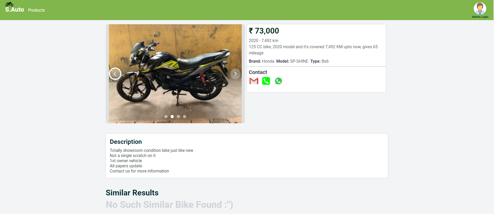
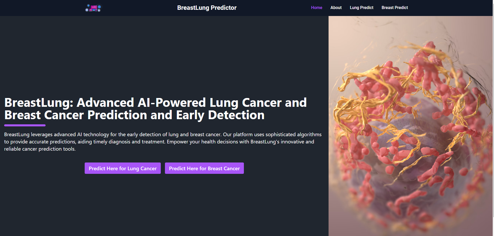
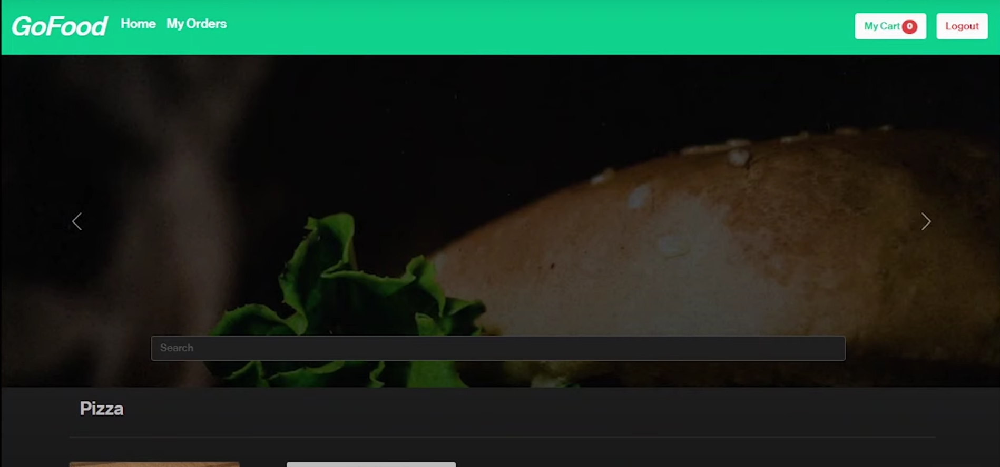
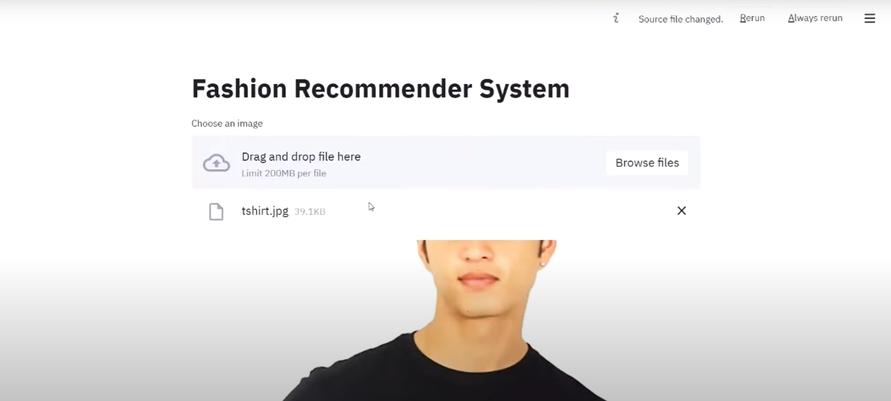
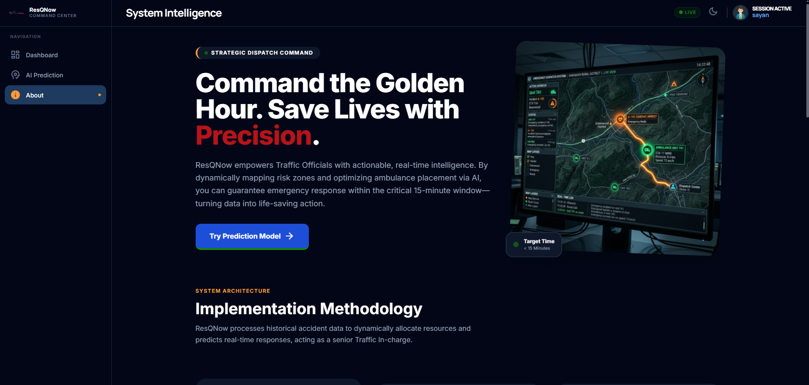
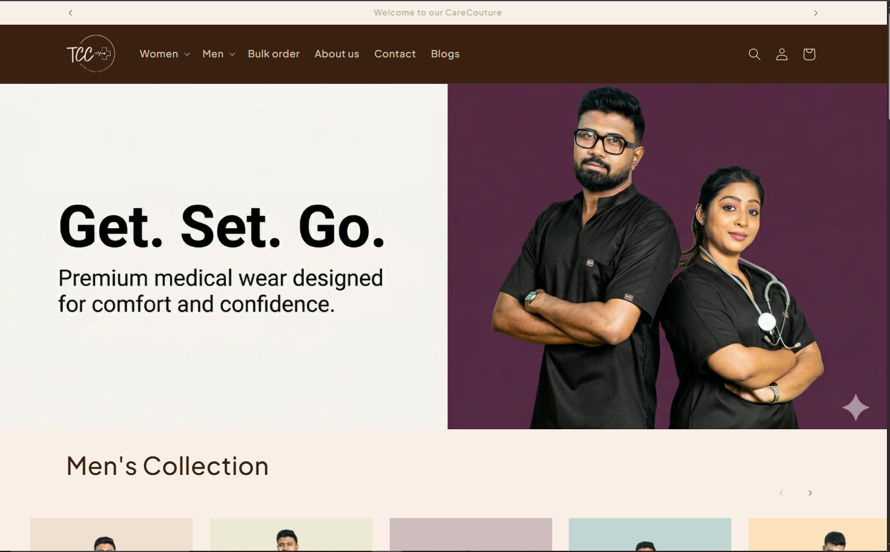
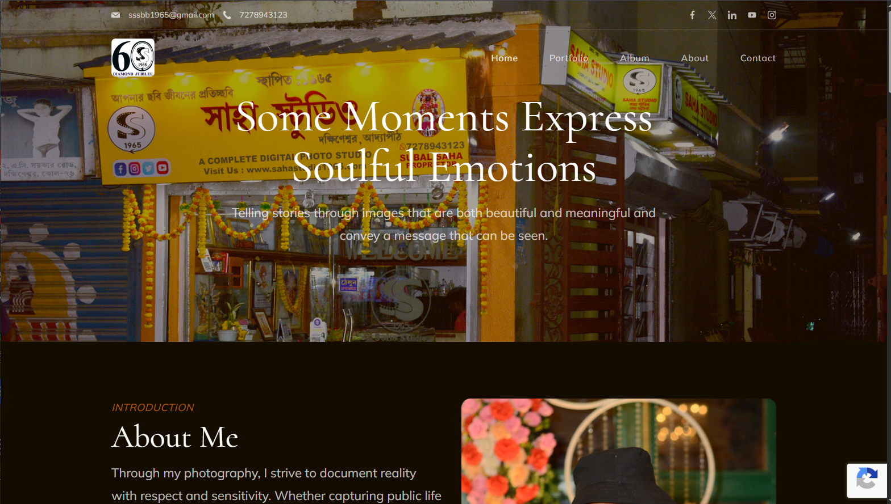
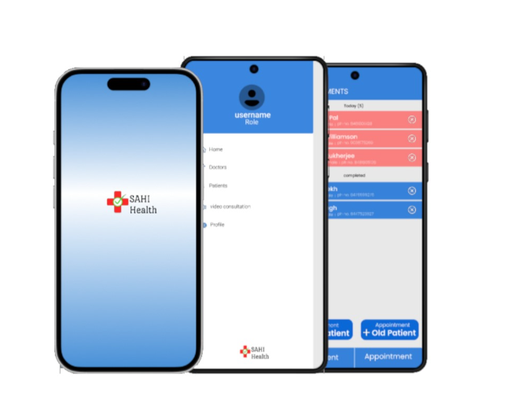

I'm
I am an AI & Machine Learning specialist with a Master’s degree in the field, backed by hands-on experience in building intelligent, real-world solutions. Alongside full-stack development expertise, I focus on designing data-driven systems, predictive models, and automation tools that solve complex problems. I am deeply passionate about exploring emerging AI technologies and continuously integrating the latest advancements into my work. With a strong analytical mindset and a drive for innovation, I aim to deliver scalable, impactful, and future-ready solutions.
About Me
My introduction
🚀 AI & Full-Stack Developer | Django • Supabase • React • ML Systems 🤖🌐
👋 Hello! I'm Sayan Chatterjee — an AI/ML engineer and full-stack developer passionate
about building intelligent, real-world applications.
With a Master’s in Artificial Intelligence & Machine Learning, I combine data-driven
thinking with scalable system design to create impactful solutions.
💡 My Expertise:
I specialize in developing AI-powered platforms, automation systems, and
high-performance web applications.
From backend architecture to machine learning integration, I turn complex ideas into
production-ready systems.
💻 What I Bring to the Table:
✅ AI/ML model integration & intelligent system design
✅ Django & Python backend development
✅ Supabase (Auth, DB, Edge Functions, Realtime)
✅ REST APIs & scalable architecture
✅ Database design & optimization (SQL, ORM)
✅ Full-stack development (React, modern JS frameworks)
✅ Automation workflows & AI-driven solutions
✅ Secure and performance-focused development
Frontend
Backend
Database
Projects
TransCRM – Enterprise CRM System
Contributed to the development of a comprehensive CRM portal for Transmogrify,
designed to streamline
customer management and business operations.
Built using Django for backend services, MySQL for database management, and Angular
for frontend development,
the system supports efficient handling of client data, role-based access control,
and internal workflows.
Implemented secure authentication mechanisms, structured database design, and
scalable APIs to ensure
reliability and performance in a production environment.
Note: This is a company project and is not publicly accessible.

S.Auto Service – Bike Marketplace
Developed a web-based platform for a client to showcase and manage a catalog of
second-hand bikes,
enabling a streamlined digital presence for their business.
The system allows the client to upload, update, and organize bike listings with
relevant details,
providing customers with an easy-to-navigate browsing experience.
Focused on clean UI, responsive design, and efficient data handling to ensure smooth
performance
and usability across devices.
Note: This was a client project and is currently not live as hosting is managed
by the client.

BreastLung Predictor
Developed a machine learning-based web application to estimate the probability of
Breast Cancer and Lung Cancer
based on user-provided medical parameters.
The system utilizes trained predictive models to analyze input data and provide risk
assessments,
enabling early awareness and informed decision-making for users.
Designed with a simple and user-friendly interface, the platform focuses on
accessibility while demonstrating
the practical application of AI in healthcare diagnostics.
Note: This tool is for educational and awareness purposes only and not a
substitute for professional medical advice.

GoFood – Food Ordering Platform
Developed a full-stack food ordering platform using the MERN stack (MongoDB,
Express.js, React, Node.js),
designed to deliver a smooth and intuitive user experience.
The application allows users to browse menus, add items to cart, and place orders
seamlessly,
with dynamic UI updates and efficient state management on the frontend.
Built scalable backend APIs for handling user authentication, order processing, and
database operations,
ensuring reliable performance and structured data management.
This project showcases my ability to build end-to-end web applications with modern
technologies,
focusing on usability, performance, and clean architecture.

Fashion Recommendation System
Developed an AI-powered fashion recommendation system that suggests visually similar
clothing items
based on user input. Leveraging deep learning with the ResNet50 model, the system
extracts image features
to deliver accurate and relevant recommendations.
Users can input an item (such as shirts, pants, or shoes) and receive the top 5
visually similar products,
enhancing the overall shopping experience through intelligent automation.
This project demonstrates the application of computer vision and deep learning
techniques in building
real-world recommendation systems.

ResQNow – Intelligent Emergency Response System
ResQNow is an AI-powered emergency response platform designed to improve post-crash
survival rates in rural areas.
The system enables traffic authorities to upload historical accident data, based on
which intelligent zone detection
and optimal ambulance placement are performed to ensure coverage within a critical
15-minute response window.
The backend dynamically clusters high-risk zones using DBSCAN with auto-tuning, and
solves the Location Set Covering Problem (LSCP)
to minimize the number of ambulances while maximizing coverage efficiency.
The platform also includes a real-time prediction system where users can select a
location and input contextual factors
(time, weather, traffic, road conditions). An AI model analyzes these parameters to:
• Predict accident risk/severity
• Recommend ambulance availability
• Suggest optimal emergency actions (AI acting as a Traffic Incharge)
This system is inspired by the "Golden Hour" principle and leverages AI-driven
decision-making to reduce emergency response time
and improve survival outcomes.

CareCouture – Medical Scrub E-commerce Platform
CareCouture is a modern e-commerce platform designed for healthcare professionals to
shop premium-quality medical scrubs
with a seamless and personalized experience. The platform focuses on combining
style, comfort, and functionality in everyday medical wear.
Built with a full-stack architecture, the system supports product browsing, dynamic
filtering, secure authentication, and smooth checkout workflows.
It also enables customization features such as embroidery options, enhancing user
personalization.
The backend is designed for scalability and performance, integrating database
management, user handling, and order processing,
while the frontend ensures a responsive and intuitive user interface for an optimal
shopping experience.
This project demonstrates my ability to build production-ready e-commerce systems
with a focus on usability, performance, and modern design.

SahaStudio – Portfolio Website
Developed a professional portfolio website for SahaStudio to showcase creative work,
services, and brand identity.
The platform was built using WordPress with a focus on clean design, responsiveness,
and easy content management for the client.
Customized themes and layouts to align with the client’s branding, ensuring a
visually appealing and modern user experience
across all devices. Implemented optimized page structures, fast loading performance,
and SEO-friendly practices
to improve online visibility.
The website empowers the client to independently manage content, update projects,
and scale their digital presence efficiently,
demonstrating my ability to deliver client-focused, production-ready web solutions.

SahiHealth – Hospital Management App
SahiHealth is a hospital management mobile application developed for a client to
streamline patient handling,
doctor workflows, and medical record management in a centralized system.
Built using React Native for cross-platform mobile development and Django for
backend services,
the app enables assistants and doctors to efficiently manage patient data, assign
cases, and track prescribed medications.
The backend is designed with secure APIs, role-based access control, and structured
data management
to ensure reliability and scalability in a healthcare environment.
This project demonstrates my ability to build production-level mobile applications
with robust backend systems,
focusing on usability, performance, and real-world operational needs.
Note: This is a client project and is not publicly available.